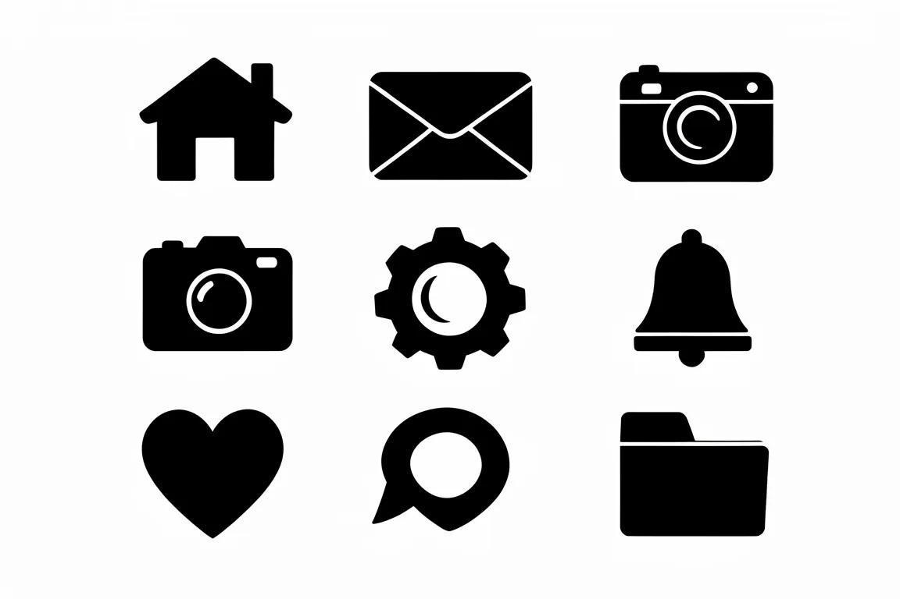

Icons as solid, one-colour silhouettes, like the glyphs of a bold typeface. Inner details are cut out of the fill as gaps. The style began with icon fonts and stays the default for small, high-contrast UI.

Core thesis
An icon is a single solid mark, and a silhouette with cut-out details reads best at small sizes and on any ground.
Design principles
Draw a solid silhouette on a 24 × 24 px grid, or on the em square of an icon font.
Cut inner details out of the fill as gaps of 1.5–2 px at 24 px.
Use one colour per icon; the icon takes the text colour.
Keep the visual weight even: each icon covers 40–60% of its live area.
Give rectangles a corner radius of 1–2 px at 24 px.
Align the glyph to the text baseline when it is set in a line of text.